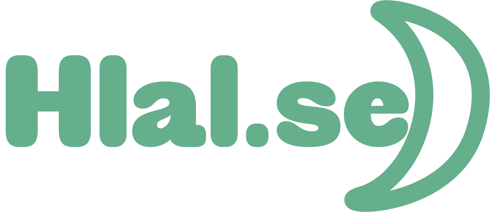

"The only way to do great work is to love what you do. If you haven't found it yet, keep looking. Don't settle." -Steve Jobs
I have studied and worked in finance since 2009. Finance is not the subject I dreamed of working with, but programming is. I started learning programming in 2000 when I was nine years old. I accidentally found a CD about Visual Basic from Microsoft and became obsessed with programming that day. Later, I used my programming skills in my work as a financial accountant, and this was my advantage. It made my job much more manageable and accurate. During COVID-19 time, I was convinced that the best work is the work where you can do it anywhere and at any time, such as programming. Then, I studied Web development & design at Jönköping University, and I would like to work in my interest subject.
Experience
2022
Webbay
Sweden
It was my internship. I worked as a designer for both web and mobile applications. I also worked on a website using WordPress to make it. HTML, CSS, and JS are mainly used to program the website. Moreover, a little bit with Flutter platform and dart language.
2018-2019
Kronofogdemyndighet
Jönköping, Sweden
The work involved ongoing case management via the Kronofogdens IT system. Case management included gathering information and processing documentation for decisions, registering maintenance by moving customers to different locations in the IT system, and checking payment deviations. The work also included mail handling, archive management, and conversations with other authorities.
2013-2015
Alaseel
Damascus, Syria
Daily financial follow-up, balance sheet, budget, certify and check that information has been registered in the computer, follow-up of attendance and calculate workers' salaries, draw advertising posters, and maintain computers.
2010-2013
Ebla
Damascus, Syria
Daily financial follow-up, balance sheet, budget, certify and check that information has been registered in the computer, follow-up of attendance and calculate workers' salaries, draw advertising posters, and maintain computers.
Education
2020-2023
Jönköping University
Jönköping, Sweden
Graphic design and web development with topics in Building database-driven web applications from the ground up, as well as creating templates for Wordpress and programming mobile web applications. design principles, typography, composition and color theory.
2019-2020
Jönköping University
Jönköping, Sweden
Master in International Financial Analysis with topics in Finance, Economics, Statistics and information technology.
2009-2012
Damascus University
Damascus, Syria
Bachelor of Economics with subjects in Economics, banking, insurance, mathematics, information technology, law.
Extra Jobs
2017 - 2020
LOGEN 2046 PLOGEN AV IOGT-NTO
Jönköping, Sweden
Accounting and financial statements
2015
Syriskt Virtuellt Universitet
Damascus, Syria
Degree coordinator and administrative
2014-2015
Kabak
Damascus, Syria
Accounting and financial statements
2013
Tejarah Alhaditha School
Damascus, Syria
Teaching IT and Syrian trade law.
Technical skills and competencies
Programming of Visual Basic, HTML, CSS and JavaScript.
Microsoft Office.
Maintenance of computers and printers.
I reached the final in the financial analysis from the CFA institute challenge
Driving license
Type: B
Language skills
Swedish
English
Spanish
Arabic
Hobbies
Chess, basketball, swimming and fishing
Web Developmet & Design Experiance
Skills
Programing Projects
One of my favorite projects is a game I have made for an exam in a JavaScript course. The game name is Ekorre.
Also, The Hang Man was a project for a company in Slovenia. I worked as a freelance for them.
Designing Projects
For designing applications, I worked with both Adobe XD and Figma. I have good skills with Adobe Illustrator and use it for logo design.
Hlal.se is a mobile app design for the company i had my internship with. I made it with Figma.
Also, I worked on Adobe XD in school, and this is an example of a mobile platform to sell food from home online. I call it Near Meal
Portfolio
For more project I have done you can visit my portfolio.